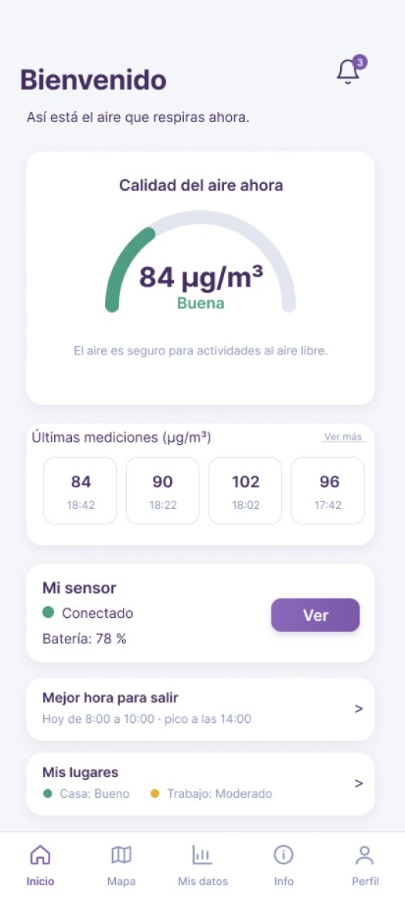
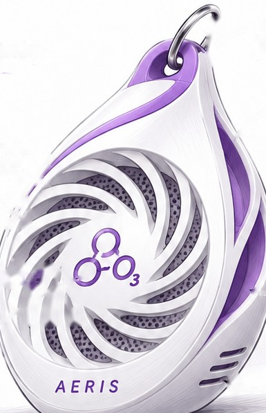

Gratuito
0 €para siempre
Para consultar el aire y medir con tu sensor.
- Mapa público de calidad del aire
- App con tu sensor y tus mediciones
- Avisos cuando el ozono sube
- Tu exposición del día
- Previsión de ozono para hoy
Red ciudadana de sensores de ozono
AERIS mide el ozono con pequeños sensores que llevan personas como tú y lo convierte en un mapa abierto a todos. Mira cómo está el aire de tu calle antes de salir.

Qué es AERIS
El ozono que respiramos a pie de calle no sale de ningún tubo de escape. Se forma cuando el sol reacciona con los gases del tráfico y de la industria, así que sube en los días de calor y en zonas soleadas como la costa mediterránea. Irrita los ojos y las vías respiratorias.
Las estaciones oficiales que lo miden son pocas y están en puntos fijos. Entre una y otra hay barrios enteros sin datos. AERIS llena esos huecos con sensores que lleva la gente encima mientras va al trabajo, a clase o sale a correr.
Cada cuadro es un barrio de una ciudad de ejemplo. Cambia el interruptor para ver qué parte de la ciudad queda cubierta.
El proyecto
Cada medición pasa por cinco piezas. Pulsa cada una para ver qué hace.
Un nodo pequeño con un sensor de ozono toma una medición cada poco tiempo y la envía al móvil por Bluetooth Low Energy.
C++ para Arduino · SparkFun nRF52840
Lo enganchas a la mochila o a la ropa y te olvidas. Mide mientras haces tu vida normal.
Tu móvil recibe cada medición, le añade la hora y la posición y la manda al servidor.
Las mediciones aparecen en el mapa público. Tú además ves tu exposición diaria y recibes avisos.
El sensor
Así será el nodo que llevan los portadores. Tiene forma de gota, cabe en la mano y se cuelga de la mochila. Pulsa los puntos para ver cada parte.

La app AERIS
Vincula tu sensor a la app y lleva contigo la calidad del aire que respiras: lo que mides tú, lo que te espera y por dónde ir.
Qué significan los colores
Bueno · Disfruta del aire libre con normalidad.
Los otros contaminantes tienen sus propios límites. Los tienes en Contaminantes.
Planes
0 €para siempre
Para consultar el aire y medir con tu sensor.
2,99 €
Para quien hace deporte o se mueve mucho por la ciudad.
A medidasegún el número de nodos
Para quien quiere su propia red de sensores en un municipio o una empresa.
Quiénes somos
AERIS es un proyecto del equipo 04 del Grado en Tecnologías Interactivas de la Escola Politècnica Superior de Gandia (UPV), para la asignatura de Biometría y Medio Ambiente. Trabajamos con Scrum, en sprints de unas tres semanas, y hacemos todo el sistema: el sensor, la app, el servidor y la web.
Preguntas frecuentes
No. El mapa y la información sobre los contaminantes son públicos. La cuenta solo hace falta si llevas un sensor.
De dos sitios: los sensores de ozono que llevan los portadores de AERIS y las estaciones oficiales de calidad del aire. En el mapa puedes ver cada capa por separado.
Con un modelo de aprendizaje automático entrenado con el histórico de las estaciones oficiales y los datos meteorológicos de AEMET. Predice el ozono de las próximas 48 horas.
Evita el ejercicio intenso al aire libre en las horas de más sol, que es cuando el ozono está más alto. Si tienes asma u otra enfermedad respiratoria, ten más cuidado.
Necesitas un sensor AERIS y la app en el móvil. Te registras, vinculas el sensor desde la app y a partir de ahí tus mediciones aparecen en el mapa y en tu cuenta.
La app de Android todavía está en desarrollo. Cuando se publique, el enlace de descarga aparecerá en esta página.